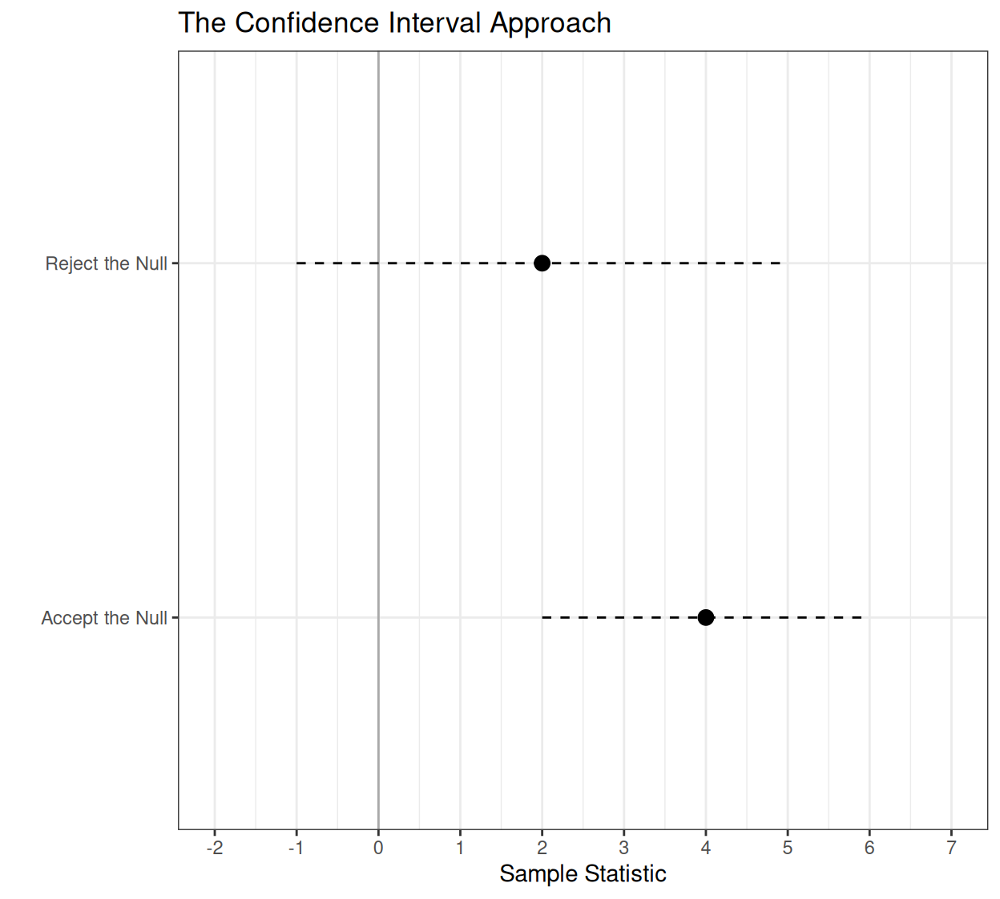
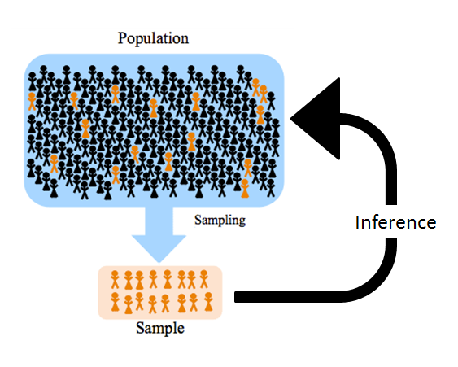
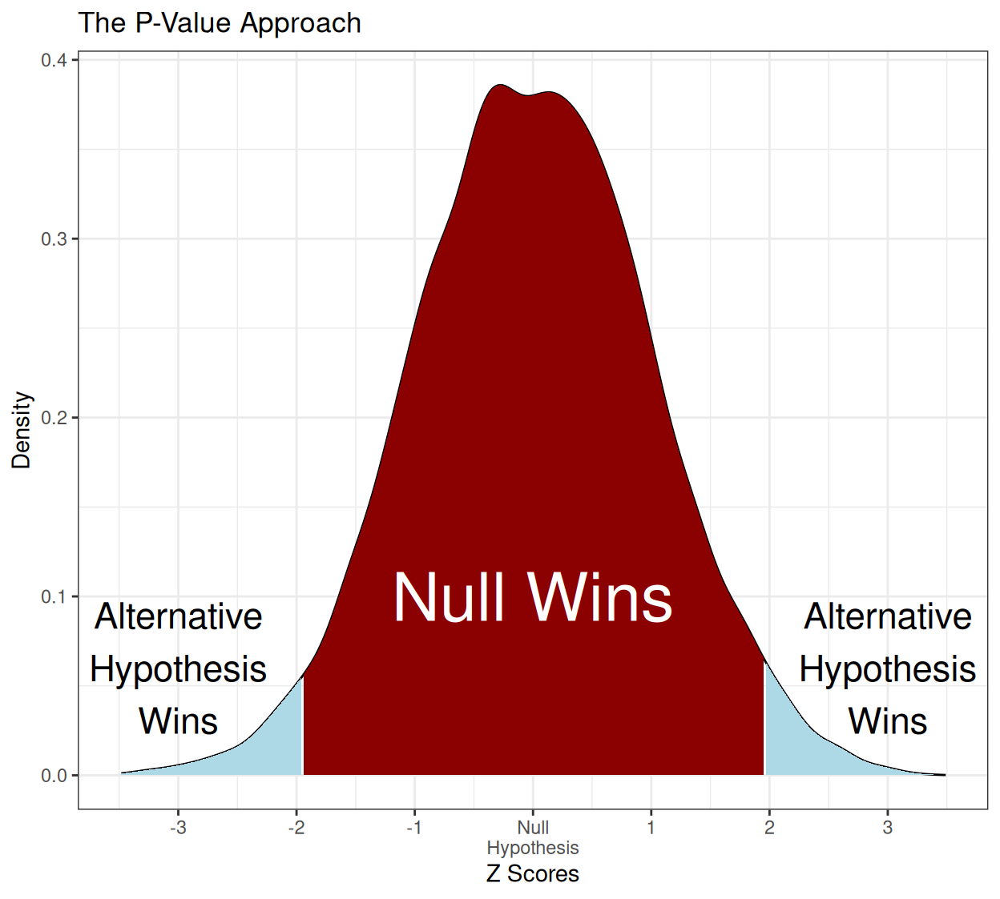
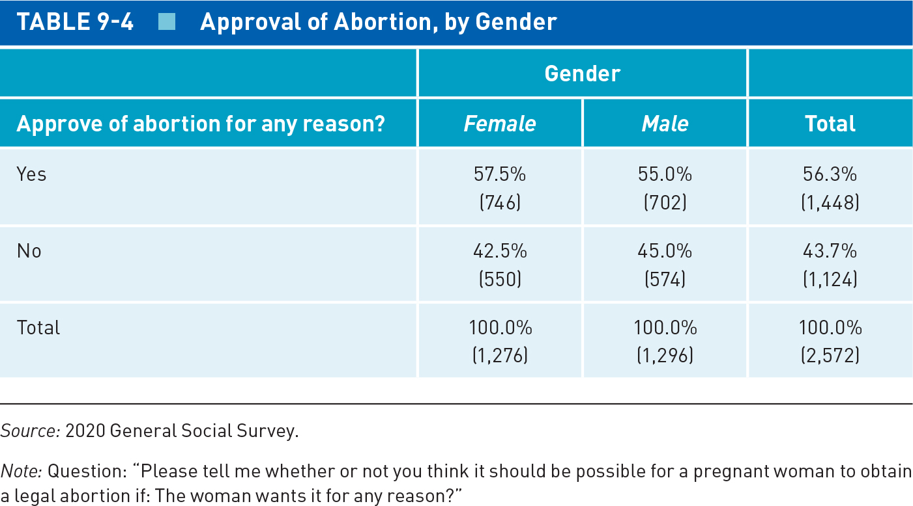
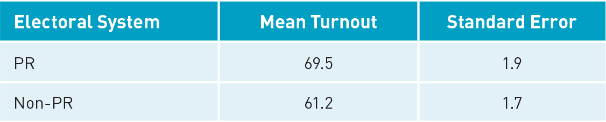
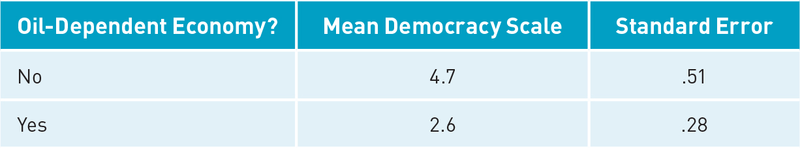

Making Statistical Inferences
Hypothesis tests with one or two samples
New Notes: Null_Hypothesis_Testing.R
Justin Leinaweaver (Spring 2026)
Defining Statistics: Level 2
Statistics helps us draw inferences from sample to population

Specifying Research Hypothesis and Null Hypothesis
Setting Threshold for Statistical Significance
Estimating Parameters With Sample Data
P-Value and Confidence Interval Approaches
Drawing Conclusions


The Rome Statute (1998) and the International Criminal Court (ICC)
\(H_A\): Democracies are more likely to join the ICC than autocracies
\(H_0\): There is no difference between democracies and autocracies in joining the ICC.
Can we reject the null hypothesis? Why or why not?
\[ \text{SE of }(p_1 - p_2) = \sqrt{\frac{p_1 q_1}{n_1} + \frac{p_2 q_2}{n_2}} \]
\[ \text{95% CI} = \text{Sample Statistic} \pm (1.96 \times \text{Standard Error}) \]
The Rome Statute (1998) and the International Criminal Court (ICC)
The Difference of Proportions = Democracies +52%
The SE of the Difference = 0.06
The 95% CI = [0.39, 0.64]
NHT: Difference of Proportions Test
prop.test(x, n)
“x” counts the successes
“n” counts the trials
The Rome Statute (1998) and the International Criminal Court (ICC)
2-sample test for equality of proportions with continuity correction
data: c(75, 29) out of c(86, 82)
X-squared = 45.667, df = 1, p-value = 1.401e-11
alternative hypothesis: two.sided
95 percent confidence interval:
0.3812589 0.6556101
sample estimates:
prop 1 prop 2
0.8720930 0.3536585 
\(H_A\): Women support abortion rights more than men
\(H_0\): There is no difference in support for abortion by gender
\(H_A\): Women support abortion rights more than men
\(H_0\): There is no difference in support for abortion by gender
2-sample test for equality of proportions with continuity correction
data: c(746, 702) out of c(1276, 1296)
X-squared = 4.6528, df = 1, p-value = 0.031
alternative hypothesis: two.sided
95 percent confidence interval:
0.003894449 0.082051215
sample estimates:
prop 1 prop 2
0.5846395 0.5416667 ANES (2020) questions with identical answer options:
How much is China a threat to the U.S.?
How much is Russia a threat to the U.S.?
Hypotheses
\(H_A\): Americans perceive China as a greater threat than Russia
\(H_0\): Americans perceive no difference in the threat level
ANES (2020) Data
2,218 respondents rated China’s threat as “A great deal” (out of 7,337 respondents)
1,905 respondents rated Russia’s threat as “A great deal” (out of 7,336 respondents)
Hypotheses
\(H_A\): Americans perceive China as a greater threat than Russia
\(H_0\): Americans perceive no difference in the threat level
\(H_A\): Americans perceive China as a greater threat than Russia
\(H_0\): Americans perceive no difference in the threat level
2-sample test for equality of proportions with continuity correction
data: c(2218, 1905) out of c(7337, 7336)
X-squared = 32.778, df = 1, p-value = 1.033e-08
alternative hypothesis: two.sided
95 percent confidence interval:
0.02795956 0.05729063
sample estimates:
prop 1 prop 2
0.3023034 0.2596783 Electoral System Design and Voter Turnout

A. What is the null hypothesis?
B. Test the null with 95% CIs
C. Test the null with an eyeball test of the difference of means
\(H_0\): No difference in turnout between PR and non-PR countries
Difference of Means: CI Approach
PR 95% CI = [65.8, 73.2]
Non-PR 95% CI = [57.9, 64.5]
Difference of Means: P-value Approach
\[ \text{SE of } (\bar{x_1} - \bar{x_2}) = \sqrt{(\text{SE of } \bar{x_1})^2 + (\text{SE of } \bar{x_2})^2} \]
Mean difference = 8.3
SE of the mean difference = 2.55
Eyeball Test = 8.3 / 2.55 = 3.3
Analyzing the Oil vs Democracy Curse

A. What is the null hypothesis?
B. Test the null with 95% CIs
C. Test the null with an eyeball test of the difference of means
\(H_0\): No difference in level of democracy between oil and non-oil dependent countries
Difference of Means: CI Approach
Not Oil Dependent 95% CI = [3.7, 5.7]
Oil Dependent 95% CI = [2.1, 3.1]
Difference of Means: P-value Approach
\[ \text{SE of } (\bar{x_1} - \bar{x_2}) = \sqrt{(\text{SE of } \bar{x_1})^2 + (\text{SE of } \bar{x_2})^2} \]
Mean difference = 2.1
SE of the mean difference = √((.51)^2 + (.28)^2)) = .58
Eyeball Test = 2.1 / .58 = 3.6
t.test(formula, data)
“formula” describes the relationship you are testing
“data” is the name of your data object
Grab the new files from Canvas
Pollock_Edwards-World.xlsx
Pollock_Edwards2023-RCompanion-Appendix-World.pdf
“Import Dataset”, “From Excel”
Rename the object, and
Exclude “NA”
\(H_A\): Democracies have larger carbon footprints than autocracies
\(H_0\): Carbon footprints do not vary by regime type
Welch Two Sample t-test
data: carbon.footprint by vdem.2cat
t = -1.986, df = 144.27, p-value = 0.04893
alternative hypothesis: true difference in means between group Autocracy and group Democracy is not equal to 0
95 percent confidence interval:
-1.268950591 -0.003026856
sample estimates:
mean in group Autocracy mean in group Democracy
1.387431 2.023420 Explore the World Dataset
Pick an interval outcome measure to explain with regime type (vdem.2cat)
Propose a research hypothesis (and null)
Test it with t.test
Report back to the class!
Null Hypothesis Testing with Multiple Groups
Read excerpts from Pollock and Edwards Chapter 10
Submit answers to selected exercises on Canvas